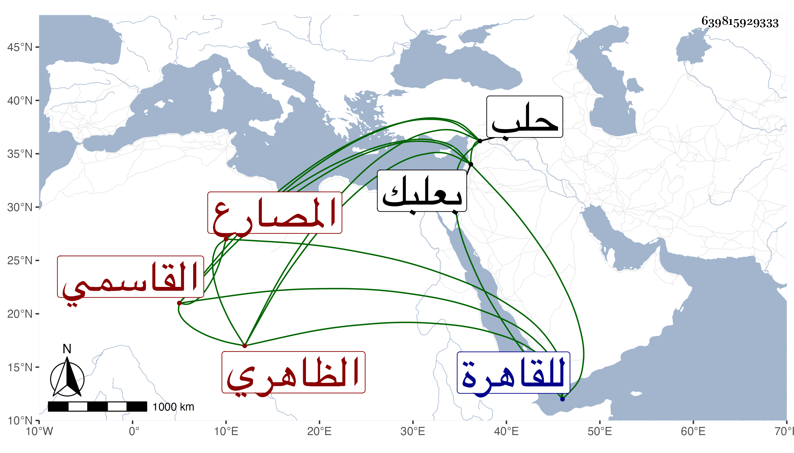

0902Sakhawi.DawLamic.ITO20230111-ara1.EIS1600.639815929333
Biography ID: 639815929333
273
جركس سيف الدين القاسمي الظاهري برقوق المصارع . كان من خواص أستاذه وتقدم بعده فولاه ابنه الناصر نيابة حلب عوضا عن دمرشاس في سنة تسع وثمانمائة ولم يقم بها الا مدة اقامة الناصر بها يوما أو يومين ، ورجع معه للقاهرة خوفا من جكم ، وكان شهما شجاعا قتل في سنة عشر بناحية بعلبك . وهو أخو الظاهر جقمق الذي تسلطن بعد دهر . ذكره شيخنا في أنبائه وابن خطيب الناصرية .
